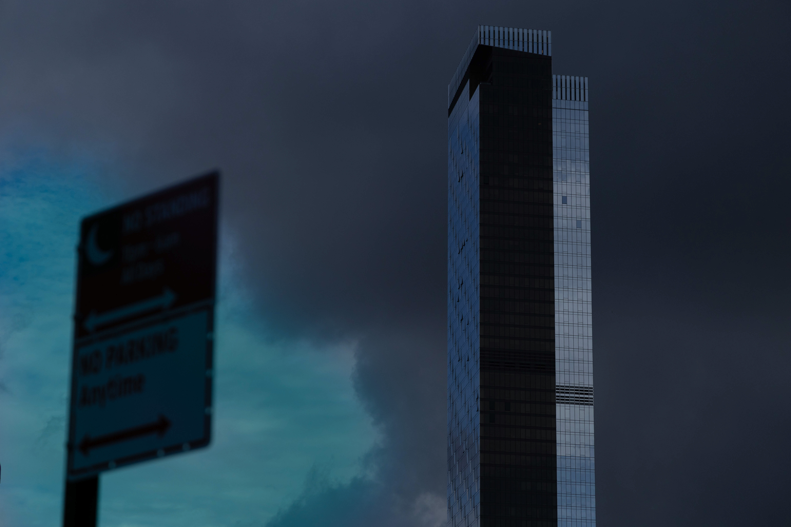
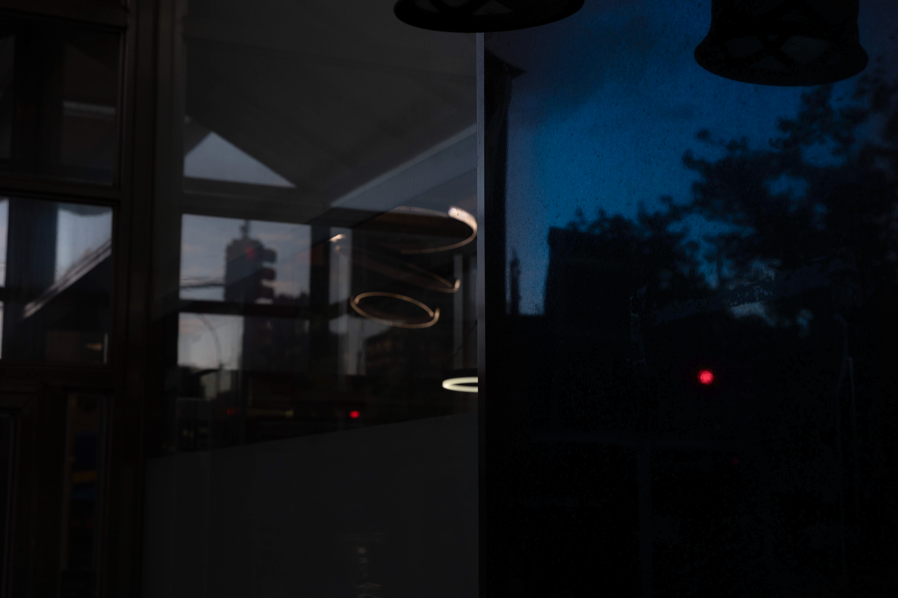
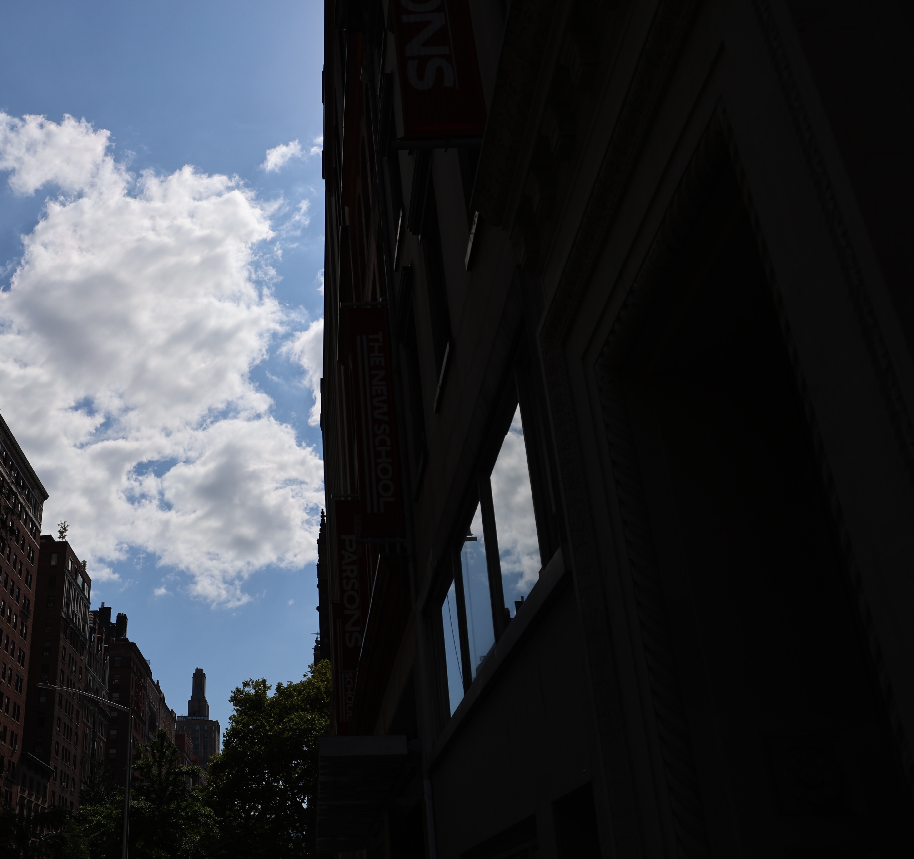
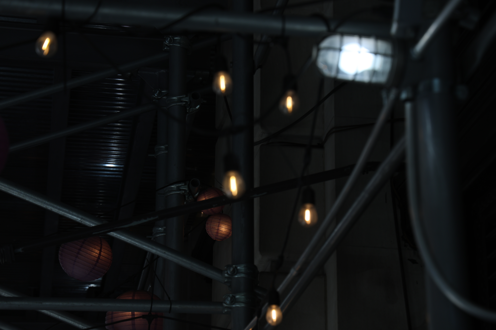
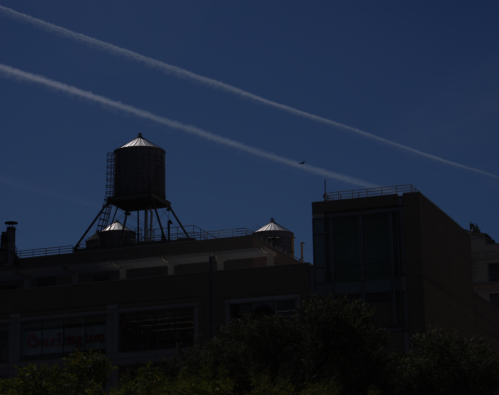

Photography / Light Study / 2024
Shadow and Structure Studies
A photography series exploring shadow, structure, and underexposed light in everyday urban scenes across New York.

About the Series
Shadow and Structure Studies is a photography series shot in New York, focusing on strong contrasts between light and shadow in everyday urban scenes.
By intentionally underexposing the images, I isolated fragments of buildings, sky, reflections, and street structures. Bright areas become more intense, while shadows flatten, hide, and frame the city in unexpected ways.
Tools: Digital camera, Lightroom Classic, Adobe Photoshop
Image Series




